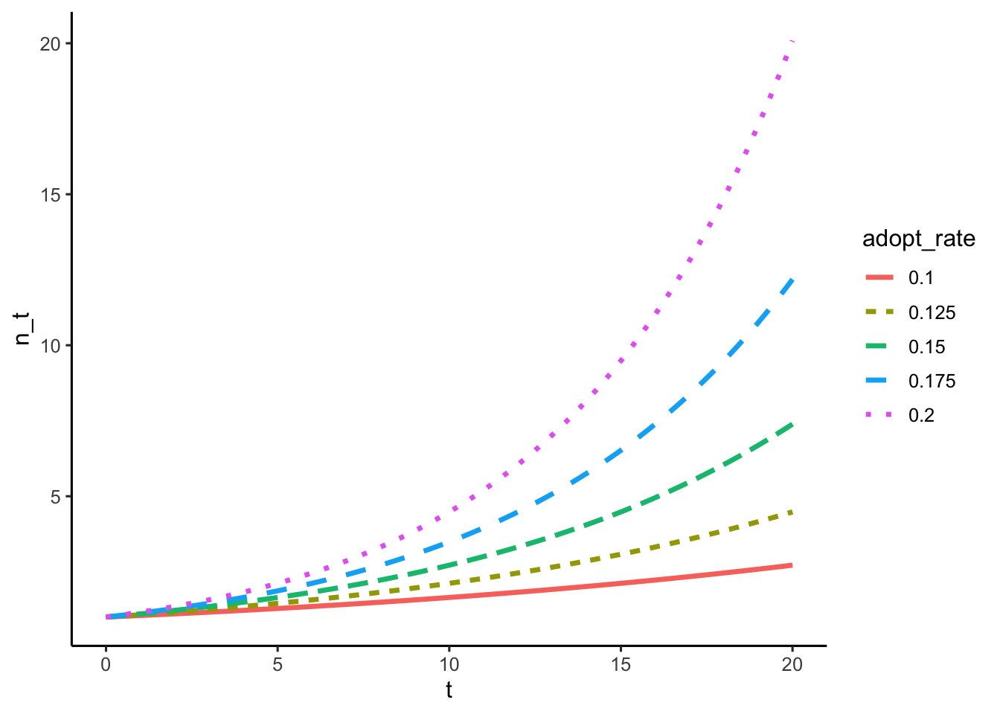
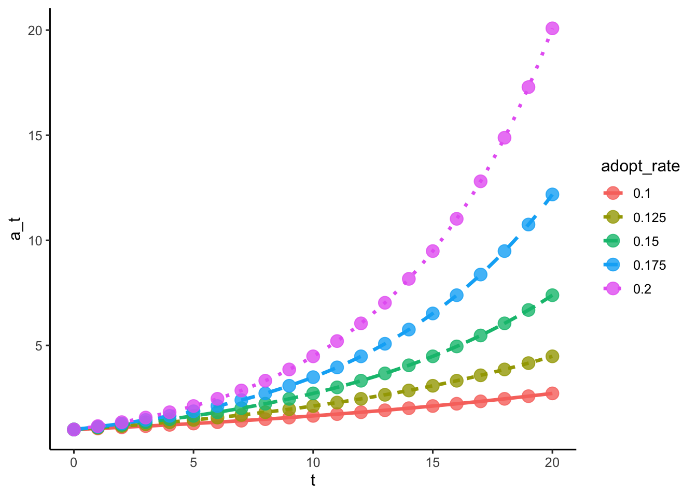

In the context of sustainability and climate adaptation, behavior change often depends not only on individual decisions but also on social networks that constrain who interacts with whom, and whether individuals use adaptive social learning to choose behaviors, as opposed to mindless, probabilistic adoption of new behaviors. When individuals use adaptive social learning to choose between behaviors, this provides the selection mechanism that generates cultural evolution.
2.1 Introduction
The puzzles of diffusion and belief change provide resistance to spreading sustainable practices unless they are addressed. Today a Cambrian explosion in green tech startups and new products and data analytics continues continues. Ancient Indigenous practices have helped humans adapt to climate change for generations upon generations. Unfortunately these practices are ignored in favor of expensive, poorly tested, maladaptive “grey infrastructure”, like sea walls that act more like dams once breached and soak up humanitarian aid like a money sponge. Similarly, In this chapter we build up models of social diffusion via social learning, starting from a minimal specification of how social interaction and learning work. Specifically, we start with the Unconstrained Contagion model of stochastic transmission in a very large population, so new learners of sustainable practices are always available. In this chapter we only consider behaviors that individuals do alone gain benefit. However, the material in this chapter provides the foundation for the next two chapters.
In the next two chapters, we extend the models developed here to understand the diffusion of behaviors that yield benefits or payoffs only in coordination with others doing either cooperative (i.e., the same) or complementary (i.e., different) behaviors. Promoting the diffusion of cooperation could improve the success rate of natural resource conservation interventions, such as sustainable groundwater usage cooperation to avoid exhausting underground aquifers that people and farms depend on. In the second chapter, we use leader-follower decisions between men and women as a model for how negative social judgements against men who follow women could support despite progress towards gender pay equity, more maternal leave, and other material improvements.
2.2 Overview
In this chapter we start building our framework for social diffusion, represented by mechanistic mathematical and software models of social transmission and learning. We begin with a simple model of a chain of unconstrained social transmission starting from a single teacher, with no limit on how many people might learn from teachers of teachers of teachers, and so on. We also assume behaviors do not require coordination with others, and so the benefit of doing a behavior is independent of the number of people doing the behavior. I show how we can use discrete-time difference equations, continuous-time differential equations, or agent-based simulation to arrive at the same conclusion: prevalence increases exponentially over time under these assumption. We tag this the Going Viral model as it could represent the “going viral” stage of an emerging trend when there are many potential new adopters and few current adopters (Rogers 2003; Smaldino 2023).
To understand how real-world constraints affect diffusion, we scaffold from this unconstrained Going Viral model, adding constraints one at a time and observing their effects. First is the constraint of finite populations in the section Bounded Virality below. If we had more time together, the next section would been is the Viral Friends section where we consider the effect of interaction structure, which could be represented by homophily or a social network, for example. Finally, adaptive social learning constrains diffusion to cultural evolutionary dynamics, presented in the section Guided Virality.
One side effect of this organization is that cultural evolution is revealed as diffusion process. Cultural evolution is enabled and driven by adaptive social learning, which provides selection pressure on behaviors (Richerson and Boyd 2020). Behavior is the analogue of phenotype in genetic evolution; adaptive social learning is the analogue of preferential mating in genetic evolution (Cavalli-Sforza and Feldman 1981; Boyd and Richerson 1995, 2005). In both cases, the behavioral gambit and phenotypic gambit are common names for the modeling assumption that knowledge of how to do a behavior, or the genetic encoding for the pheotype, are faithfully transmitted. Furthermore, this gambit assumes that once an individual knows how to do a behavior, they perform it perfectly, or the individual’s genotype is perfectly expressed in the phenotype. A final assumption embedded in this gambit is a one-to-one correspondence between knowledge/genetics and behavior/phenotype.
In adaptive social learning, model individuals prefer learning from others who are more successful, for example, or perhaps prefer adopting behaviors practiced by a greater number of their social partners (Laland 2004; Kendal et al. 2018; Toyokawa, Whalen, and Laland 2019). If individual psychology is such that more successful individuals are more likely to be chosen as teachers, this is called success-biased learning. When more prevalent behaviors are preferentially learned, this is frequency-biased learning. Keep in mind that these adaptive learning strategies are to cultural evolution what preferential mating is to genetic evolution: adaptive social learning induces evolutionary diffusion dynamics.
In the two chapters following this one we will harness cultural evolution to understand how norms of cooperation and gender equity in leadership could evolve to sticky equilibria that may take special efforts to deconstruct, even in idealized simulations. These models are the final scaffold on the diffusion model presented here. We represent these coordination problems in sustainability in terms of evolutionary game theory.
2.3 These models not endorsed for belief/opinion change
Social influence dynamics of beliefs or opinions (Blau 1974; DeGroot 1974; Lorenz 2007; Flache and Macy 2011; Turner and Smaldino 2018; Galesic et al. 2021) are considered as a different class of models in this framework since the thing being transmitted is latent, i.e., not directly observable. In these cases, we can only observe behaviors that either report or belie latent psychological beliefs or opinions. This is planned for future incorporation into the Computational Social Science for Sustainability course material in the near future.
2.4 Model
The abstract model of diffusion presented here provides a formal and agent-based framework to be filled in with specific social structure and socio-cognitive processes as appropriate for different contexts. Contexts are specified by, for example, the available behaviors, social network structure, and dominant social learning process, e.g., contagion, success-biased, and conformity.
We begin by developing a formal modeling system for behavior diffusion that can be used for a number of applications. An evolutionary dynamical systems model that assumes a large (i.e., \(N \to \infty\)), well-mixed population time series of behavioral adoption can generate time series and be used for invasion analyses that can provide simple heuristics for understanding how well different learning strategies can promote self-sustaining behavioral diffusion following a sustainability intervention. This diffusion model model is formed by manipulating the replicator equation to be expressed in terms of state transitions. As part of our Analysis section below, I will prove that conformity alone cannot stimulate self-sustaining behavior diffusion when the behavior is initially rare, as is the case currently for truly adaptive, sustainable practices. On the other hand, I will also show that success-biased social learning can be harnessed to stimulate faster spread of sustainable adaptations.
These state transition probabilities naturally slot in to the Kimura-Crow model of trait diffusion under replicator-like dynamics, but with stochastic dynamics among finite populations. This approach can be used to generate time series of adaptation prevalence, but for our analyses we use another useful feature of this model: its ability to calculate the success rate of an intervention, i.e., the probability that all individuals adopt the adaptive sustainable practice, \(A\). This is commonly known as the fixation probability of a trait in theoretical biology.
Agent-based modeling is a computational technique that explicitly specifies cognitive attributes and rules that agents, i.e., simulated people follow. I will close this section demonstrating how to develop agent-based models that use different learning rules, social networks, and other model dynamics that mechanistically represent the identical behavior change transition probabilities. For this we will use my R library for agent-based modeling, socmod. Social scientists can write code that describes how learning works, and who interacts with whom. Formal models help us understand the quantitative implications of our verbal models at the most basic level, often with the most unrealistic assumptions that still prove useful. Agent-based models complement more abstract formal mathematical models by providing scientists with a way to model detail on finer scales and test how additional factors like group structure and social networks affect diffusion.
Our models generate both observations of prevalence time series and outcomes of whether a simulated intervention is successful. In addition to these, we will analyze the onset dynamics that tell us whether the adaptive behavior will endogenously diffuse. In other words, onset dynamics tell us whether the adaptive behavior will continue to diffuse sociall following direct instruction of the seed set of individuals who participated in the intervention. These analyses will be explained in further detail as needed in the Analysis following the model exposition.
2.4.1 The Prevalence Dynamic
The prevalence of a behavior is the fraction of a population that has adopted that behavior. The prevalence of adaptive behavior \(A\) at time \(t\) is denoted \(a_t\) if we are considering discrete time, where the time between one time step and another is one, i.e., \(\Delta t = 1\). In computational science, \(\Delta\) to the left of another variable means change in.
The prevalence dynamic for behavior diffusion with two options represents the change in \(a\) over one time step. For discrete time, the change in prevalence, \(\Delta a_t\), over one time step, \(\Delta t = 1\), is \[
\frac{\Delta a_t}{\Delta t} = \Delta a_t = (1 - a_t)P(A \mid L)+ a_t~P(L \mid A).
\] In words this says that the change in \(a\)increases by the chance that an \(L\)-doer changes to be an \(A\)-doer, scaled by the prevalence of \(L\)-doers in the population, which is \(1 - a\). The
We can do a mathematical trick where we let the change in time get very small, written as an arrow point towards, or “going to”, zero: \(\Delta t \to 0\). Then instead of writing \(\Delta t\) we write the change as \(dt\), where the letter d stands in for the symbol indicating change, but now a small one. If time changes very little for every iteration of the model, then prevalence changes very little, too. Then we have that \(\Delta a \to da\) as well. This brings us from a discrete to a continuous model, and now we can use calculus to understand how different socio-cognitive mechanisms and processes affect whether prevalence dynamics lead to widespread diffusion. In this case, we drop the subscript \(t\) on prevalence, and hide the \((t)\) part of the continuous prevalence \(a(t)\) so that the prevalence dynamic becomes \[
\frac{da}{dt}= \dot a = (1 - a)P(A \mid L)+ aP(L \mid A).
\]
2.4.2 Going Viral: Contagion
The contagion model of social transmission make minimal assumptions, but still enable helpful analyses. We fill in \(P(A \mid L)\) and \(P(L \mid A)\) in the prevalence dynamic as follows. In contagion, \(L\)-doers switch behavior and adopt \(A\) with some chance, \(\alpha\), when they interact with an \(A\)-doer. The second assumption is that \(A\)-doers sometimes can not or do not continue doing the adaptive behavior, and drop it with probability \(\delta\). Dropping an adaptation could be incidental, for example if someone had installed residential solar at one home, but they are moving somewhere else that doesn’t have residential solar, and so will have to stop doing the behavior generate home electricity with solar energy, at least for some time. It could also be due to forgetting, changing preferences, or any other possible explanation.
We represent contagion assumptions in \(P(A \mid L)\) and \(P(L \mid A)\) as \[
P(A \mid L)= \alpha a, \quad P(L \mid A)= \delta.
\] Then the full prevalence dynamics are
\[
\dot a= \alpha a(1 - a) - \delta a
\]
Prevalence dyanmics
The discrete model can be represented as the following function that takes variables corresponding to time, t, an adoption rate, adopt_rate, and the drop rate, drop_rate, which are \(t\), \(\alpha\), and \(\delta\) in math.
I will now create a table of values for \(n(t)\) for different adoption rates, \(\alpha \in \{0.1, 0.105, 0.2, 0.5\}\), all with the same drop rate, \(\delta = 0.1\). I’ll make a function to encapsulate the boilerplate steps called make_a_tbl in the code block below (unfold to view). It uses some helpful default settings to make an interesting visualization, which we do below. Below is the function signature for make_a_tbl, with the full function definition provided in a folded code block below that. Click the triangle to unfold the full definition.
make_a_tbl <-function(tmin =0.0, tmax =20.0, dt =0.2, adopt_rates =seq(0.1, 0.2, 0.025), drop_rate =0.05) {# Define vector of time points passed to the n function defined above tvec <-seq(tmin, tmax, dt)# Create table to plot a_t for different adoption rate (alpha) values a_tbl <- tibble::tibble(# Repeat time vector four times for each alpha.t =rep(tvec, length(adopt_rates)), # Create a_t vector for each adopt_rate, a_0=1 implicita_t = purrr::map(adopt_rates, ~a(tvec, .x, drop_rate)) |> purrr::flatten_dbl(),# Repeat adopt rate for each tstepadopt_rate =factor( purrr::map(adopt_rates, ~rep(.x, length(tvec))) |> purrr::flatten_dbl(),levels = adopt_rates ) )return (a_tbl)}
Now let’s use ggplot2 to plot the series for each adoption rate, which will be indicated by line color and type.
library(ggplot2)a_tbl <-make_a_tbl()unconstrained_plot <-ggplot(a_tbl, aes(x = t, y = a_t, color = adopt_rate, linetype=adopt_rate)) +geom_line(linewidth =1.2) +theme_classic(base_size =12)print(unconstrained_plot)

Check discrete and continuous are equivalent
Let’s close our analysis by checking that \(a_t = \lambda^t a_0\) generates equivalent values of \(n(t')\) for integer values \(t'=0,1,2,\ldots,T\). To do this we’ll create another make_ function but for the discrete formula for \(a_t\) (Equation 2). We’ll then (literally) add those points to the unconstrained_plot, coloring by adoption rate.
In the code block below we write an R function for \(a_t\), a_t_discrete, which is used by make_a_discrete_tbl to create a table of discrete-model values from time steps 0 to 20, this time setting dt = 1. The function signatures are below. Expand the code block below that to see the full function definitions.
Plot objects returned by ggplot2 can be extended. In this case we add points for the discrete time steps, expecting they will line up with the lines plotted above.
unconstrained_plot_update <- unconstrained_plot +geom_point(aes(x = t, y = a_t), data = a_discrete_tbl, size =4, alpha =0.8)print(unconstrained_plot_update)

Success!
2.4.3 Guided Virality: Cultural Evolution
Cultural evolution has provided many explanations for previously mysterious phenomena, such as cultural ratcheting , identity signaling, the evolution of bad science (Smaldino and McElreath 2016; Smaldino, Turner, and Contreras Kallens 2019), and more. Its power comes from its formulation of human populations as a system of replicators who pass on their “trait” to their “offspring”. However, as time has progressed, we can see that previous formulations perhaps overcomplicated the situation by assuming that the locus of the cultural selection process is preferential mating, resulting in Punnet-square style pairings of diploid alleles that stand in for behaviors in the classic formulation (Cavalli-Sforza and Feldman 1981). One additional hidden assumption powers the use of classic genetic evolution and cultural evolution alike: the phenotypic gambit in genetic evolution assumes that an individual’s phenotype (e.g., an expressed trait \(A\)) is a suitable stand-in for the genetic material, the allele. In our model we make a similar, but distinct, assumption. When we say a behavior is transmitted, this includes acquiring the necessary skills to do the behavior. The learning process itself is abstracted away in basic models of cultural evolution like this one.
To show that the prevalence dynamic can represent cultural evolution, we show it is actually equivalent to the replicator equation first, without mutation. We exclude mutation because in most cases there already are sustainable practices we could be doing more, but they haven’t diffused widely. Some Indigenous sustainable practices have existed for millenia, like mangrove forest management for mitigating sea inundation (McNamara et al. 2020; Piggott-McKellar et al. 2020) and prescribed burns to mitigate the risk of catastrophic fire (Eisenberg et al. 2019; Kolden 2019). Our focus is endogenous dynamics, so mutation could be ignored for strategic reasons as well.
\[
\frac{da}{dt} = a(w_A - \bar{w})
\]
where:
\(a\): frequency of type $A $
\(w_A\): differential reproduction rate of type $A $
\(\bar{w} = a w_A + (1 - a) w_L\): average reproduction rate
This isn’t about imitation — it models how types spread when some individuals leave more offspring than others.
In cultural evolution, though, traits spread through learning, not reproduction. So we reinterpret this equation using behavioral transitions instead.
We now show how the replicator equation can be re-expressed in terms of individual-level transitions:
Substitute \(\bar{w} = a w_A + (1 - a) w_L\): \[
\frac{da}{dt} = a(w_A - a w_A - (1 - a) w_L) = a(1 - a)(w_A - w_L)
\]
Now divide and multiply by \(\bar{w}\): \[
\frac{da}{dt} = \frac{a(1 - a)}{\bar{w}}(w_A - w_L) \cdot \bar{w}
\]
Define: \[
P(A \mid L) = \frac{a w_A}{\bar{w}}, \quad P(L \mid A) = \frac{(1 - a) w_L}{\bar{w}}
\]
Then: \[
\frac{da}{dt} = (1 - a) P(A \mid L) - a P(L \mid A)
\]
Success-Biased Learning
Learners using the success-biased strategy preferentially select teachers with greater apparent fitness. In our models fitness values are the same for every behavior for every agent. We call \(f_A\) the from doing the behavior \(A\), the adaptive behavior. Similarly, \(f_L\) is the fitness gained from doing the legacy behavior, \(L\).
We now formalize the success-biased learning model by writing equations for \(P(A|L)\) and \(P(L|A)\) based on their verbal description (Smaldino 2020). For someone currently doing \(L\), the chance they will adopt practice \(A\) instead is proportional to the prevalence of \(A\), \(a\), and the fitness of those doing that behavior, \(f_A\). \[
P(A \mid L) \propto a f_A.
\]
Similarly, if one is doing \(A\), the chance they will adopt \(L\) instead is proportional to \[
P(L \mid A) \propto (1 - a) f_L
\]
We need to normalize by the sum of the probabilities since these must sum to 1. This sum happens to be the mean \[
\bar{f} = a f_A + (1 - a) f_L.
\]
This shows that: - For any finite $$, $ < 0 $near $a = 0 $ - Only in the limit \(\gamma \to -\infty\) (strong anti-conformity) does \(\frac{da}{dt} > 0\) near zero
The Anti-Conformity Paradox
Anti-conformity enables invasion but prevents retention
Anti-conformity is still weaker than
Conformity enables retention but blocks invasion
So frequency bias alone cannot explain the emergence and spread of adaptive behaviors. Other forces (e.g. success bias, drift, coordination) are required.
Broader Implication
This framework — based on transition probabilities — unifies: - Success bias - Frequency bias - Replicator dynamics - Epidemic-style (SIS) models
And it reveals a core result: conformity blocks innovation, while anti-conformity can never sustain it.
These dynamics can also be tuned developmentally, suggesting new bridges to psychology and life-history theory.
Dynamics
When \(t\) is continuous we can write the number of adopters of \(A\) as a mathematical function of time with \(t\) in parentheses: \(n(t)\). Instead of a recursion equation:
\[
\frac{da}{dt} = \alpha a - \delta a
\]
Which integrates to: \[
a(t) = a_0 a^{\rho t},
\] where \(\rho = \alpha - \delta\).
If we restrict \(t\) to integers, i.e., \(t \in \{0, 1, \ldots, T\}\), then: \[
a(t) = \{a_0, a_0 \cdot e^{\rho}, a_0 \cdot e^{2\rho}, \ldots, a_0 \cdot e^{T\rho}\}.
\]
This implies that \(e^\rho = \lambda\), so: \[
\rho = \ln \lambda.
\]
We can verify this algebraically. If: \[
a_0 e^{t'\rho} = a_0 \lambda^{t'},
\] then dividing both sides by \(a_0\) and taking the natural logarithm gives: \[
\ln e^{t'\rho} = \ln \lambda^{t'},
\] and using the identity \(\log_b(x^y) = y \log_b(x)\): \[
t' \ln e^\rho = t' \ln \lambda.
\]
Dividing both sides by \(t'\) and noting that \(\ln e^\rho = \rho\), we confirm: \[
\rho = \ln \lambda,
\] visualized in the Figure below.
2.5 Discussion
The social diffusion of sustainable practices, or any behavior, occurs through social learning between individuals over time. If there are many who have not yet adopted some practice and that practice is more likely to to be adopted than dropped, the spread of that practice will seem like it will forever accelerate. However, when a significant proportion of individuals in a population begin to adopt the behavior, the number of potential learners decreases and the change in adaptive behavior prevalence over time begins to decrease. The replicator equation, the cornerstone of evolutionary theory, can be written as a state transition equation, where state transition probabilities correspond to different learning processes. This includes contagion learning. This implies that contagion learning is a special case of the replicator dynamic, which further implies that contagion learning is a special case of cultural evolution, generally construed.
I proved that this that conformity alone cannot diffuse an adaptation. Smaldino (2018) says “sigmoid curves are good indicators of conformist transmission”, but this seems to imply that conformist transmission alone cannot possibly generate a sigmoid curve. Since we can obtain contagion diffusion dynamics from the replicator equation, but not vice-versa, this tells us that a sigmoidal prevalence time series alone cannot tell us much beyond some sort of replicator is at work. The evolutionary replicator dynamic, then, was shown to be equivalent to a state transition dynamic, including contagion transmission. The behavior switching probabilities provide an abstract process to be filled in and customized for specific investigations. This unlocks the power of invasion analysis for a larger class of learning processes that don’t necessarily neatly map onto concepts of fitness and reproduction, but do specify under what conditions one individual doing one behavior may adopt the alternative behavior. From this we - This conceptualization generates some new questions whose answers could further serve the cause of promoting sustainability through intelligent intervention design. First, it provides a method for formal analysis of invasion dynamics with highly non-linear differential equations. It seems plausible that complex contagion, prestige bias, and social network constraints could be expressed in this framework. Then one simply expands the derivative around \(a << 1\) and calculates the sign, as we did to prove conformity cannot diffuse adaptations.
Blau, Peter M. 1974. “Parameters of social structure.”American Sociological Review 39 (5): 615–35.
Boyd, Robert, and Peter J. Richerson. 1995. “Why culture is common, but cultural evolution is rare.”Proceedings of the British Academy 88: 77–93. https://doi.org/citeulike-article-id:1339814.
———. 2005. The Origin and Evolution of Cultures. New York: Oxford University Press.
Cavalli-Sforza, Luigi Luca, and Marcus W. Feldman. 1981. Cultural Transmission and Evolution: A Quantitative Approach. Princeton: Princeton University Press.
DeGroot, Morris H. 1974. “Reaching a Consensus.”Journal of the American Statistical Association 69 (345): 118–21.
Eisenberg, Cristina, Christopher L. Anderson, Adam Collingwood, Robert Sissons, Christopher J. Dunn, Garrett W. Meigs, Dave E. Hibbs, et al. 2019. “Out of the Ashes: Ecological Resilience to Extreme Wildfire, Prescribed Burns, and Indigenous Burning in Ecosystems.”Frontiers in Ecology and Evolution 7 (November): 1–12. https://doi.org/10.3389/fevo.2019.00436.
Flache, Andreas, and Michael W. Macy. 2011. “Small Worlds and Cultural Polarization.”The Journal of Mathematical Sociology 35 (1-3): 146–76.
Galesic, Mirta, Henrik Olsson, Jonas Dalege, Tamara Van Der Does, and Daniel L. Stein. 2021. “Integrating social and cognitive aspects of belief dynamics: Towards a unifying framework.”Journal of the Royal Society Interface 18 (176). https://doi.org/10.1098/rsif.2020.0857.
Kendal, Rachel L., Neeltje J. Boogert, Luke Rendell, Kevin N. Laland, Mike Webster, and Patricia L. Jones. 2018. “Social Learning Strategies: Bridge-Building between Fields.”Trends in Cognitive Sciences 22 (7): 651–65. https://doi.org/10.1016/j.tics.2018.04.003.
Kolden, Crystal A. 2019. “We’re not doing enough prescribed fire in the western united states to mitigate wildfire risk.”Fire 2 (2): 1–10. https://doi.org/10.3390/fire2020030.
Laland, Kevin N. 2004. “Social Learning Strategies.”Learning and Behavior 32 (1): 4–14.
Lorenz, Jan. 2007. “Continuous Opinion Dynamics Under Bounded Confidence: A Survey.”International Journal of Modern Physics C 18 (12): 1819–38. https://doi.org/10.1142/s0129183107011789.
McNamara, Karen E., Rachel Clissold, Ross Westoby, Annah E. Piggott-McKellar, Roselyn Kumar, Tahlia Clarke, Frances Namoumou, et al. 2020. “An assessment of community-based adaptation initiatives in the Pacific Islands.”Nature Climate Change 10 (7): 628–39. https://doi.org/10.1038/s41558-020-0813-1.
Piggott-McKellar, Annah E, Patrick D Nunn, Karen E McNamara, and Seci T Sekinini. 2020. “Dam(n) Seawalls: A Case of Climate Change Maladaptation in Fiji.” In Managing Climate Change Adaptation in the Pacific Region, edited by W. Leal Filho, 69–84. Springer. https://doi.org/10.1007/978-3-030-40552-6.
Richerson, Peter J., and Robert Boyd. 2020. “The human life history is adapted to exploit the adaptive advantages of culture.”Philosophical Transactions of the Royal Society B: Biological Sciences 375 (1803). https://doi.org/10.1098/rstb.2019.0498.
———. 2023. “Contagion.” In Modeling Social Behavior: Mathematical and Agent-Based Models of Social Dynamics and Cultural Evolution, 83–116.
Smaldino, Paul E., and Richard McElreath. 2016. “The Natural Selection of Bad Science.”Royal Society Open Science 3. https://doi.org/10.1098/rsos.160384.
Smaldino, Paul E., Matthew A. Turner, and Pablo A. Contreras Kallens. 2019. “Open science and modified funding lotteries can impede the natural selection of bad science.”Royal Society Open Science 6 (8): 191249. https://doi.org/10.1098/rsos.191249.
Toyokawa, Wataru, Andrew Whalen, and Kevin N Laland. 2019. “Social learning strategies regulate the wisdom and madness of interactive crowds.”Nature Human Behaviour. https://doi.org/10.1101/326637.
Turner, Matthew A., and Paul E. Smaldino. 2018. “Paths to Polarization: How Extreme Views, Miscommunication, and Random Chance Drive Opinion Dynamics.”Complexity. https://doi.org/10.1155/2018/2740959.